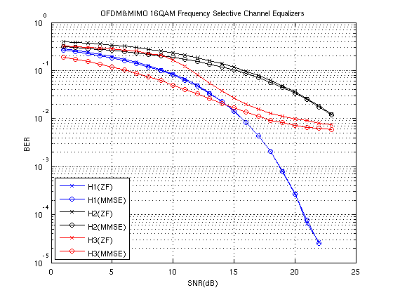

clc, clear, close all;
M = 16;
k = log2(M);
SNRs = 1:23;
totPak = 1;
N = 2304*M*8;
traceback=12;
sigpow=1;
numTx = 2;
trel = poly2trellis(7,[133,171]);
spect = distspec(trel,2);
R=1/2;
colors = ['bx-','kx-','rx-';
'bo-','ko-','ro-'];
for Htype = 1:3
switch Htype
case 1,
h11 = [1 .4 .3];
h12 = [.5 .2 .4];
h21 = [.2 0 0];
h22 = [1 0 .2];
case 2,
h11 = [.1 .4 .3 .1 0 0];
h12 = [1 .2 .4 0 .1 0];
h21 = [.4 .7 0 0 0 0];
h22 = [1 0 .2 .3 .2 0];
case 3,
h11 = [-0.207825312971323 - 0.885959613379447i,-0.110264648648221 + 0.006269426000565i,-0.021890820630967 + 0.766756406978132i,0.342116916841593 + 0.712187589395214i,0.982058089552382 + 0.935345563060326i,-0.015846460109917 - 0.762001691355845i,0.801320201705866 + 0.811523676492256i,-0.100894980241602 - 0.323578523994580i,-0.979657614269213 + 0.490260236606167i,0.116314023823932 + 0.328118499831679i];
h12 = [0.653172977742221 + 0.912745400640643i,0.196137893132524 - 0.474124656047889i,-0.618743926560186 + 0.109628070434595i,0.233338528772674 + 0.016619256837904i,0.745901605391557 + 0.860617919686212i,0.938772673753796 + 0.616888476941424i,-0.408517240103796 - 0.453356849754533i,0.799610265465585 + 0.482105286702828i,0.283527482112880 - 0.078409622940360i,-0.175869691390090 + 0.703468067439004i] ;
h21 = [-0.483296370334166 + 0.502858217888533i,0.938879535108046 + 0.960247978338906i,-0.357829570516107 - 0.057086975659580i,0.428066204830462 + 0.830439831257469i,-0.675228188020881 + 0.808296522774002i,-0.865167216944402 - 0.039315379014448i,-0.226873850389953 - 0.527847506860703i,-0.952879555223782 + 0.477746543497832i,0.284890324261085 - 0.875617390274975i,-0.035247422480198 + 0.216503938218333i];
h22 = [-0.103306516347953 - 0.823846290284879i,-0.583724574269771 + 0.678494531916382i,-0.233722328586736 - 0.903245102882790i,0.758902415409831 - 0.566590859622156i,0.479319278718291 + 0.379015840524281i,-0.277932131527824 - 0.126640082731047i,-0.282339178581562 - 0.125035101338006i,0.877555985624150 + 0.465024370776541i,0.900794610419087 + 0.226377183622991i,-0.001240242185028 - 0.197598571629516i];
end
h11fft = fft(h11.',64,1);
h12fft = fft(h12.',64,1);
h21fft = fft(h21.',64,1);
h22fft = fft(h22.',64,1);
BigHFFT = zeros(numTx,numTx,64);
BigHFFT(1,1,:) = h11fft;
BigHFFT(1,2,:) = h12fft;
BigHFFT(2,1,:) = h21fft;
BigHFFT(2,2,:) = h22fft;
berVecZF = zeros(1,totPak);
berVecMMSE = zeros(1,totPak);
for SNR=SNRs
bits = randi([0,1],numTx,N);
msg = zeros(2,size(bits,2)/k);
for ii = 1:numTx
msg(ii,:) = bi2de(reshape(bits(ii,:),k,size(bits,2)/k).','left-msb')';
end
xTilde = qammod(msg,M,0,'gray');
frameCount=numel(xTilde)/48/numTx;
OFDMsig1 = OFDMmod(xTilde(1,:),frameCount);
OFDMsig2 = OFDMmod(xTilde(2,:),frameCount);
Y1 = conv(OFDMsig1,h11) + conv(OFDMsig2,h12) ;
Y2 = conv(OFDMsig1,h21) + conv(OFDMsig2,h22) ;
Y1 = Y1(1:length(OFDMsig1));
Y2 = Y2(1:length(OFDMsig2));
N0linear = std([Y1;Y2])/10^(SNR/10);
N0db = 10*log10(N0linear);
noise = wgn(numTx,length(OFDMsig1),N0db,'complex');
Y1N = Y1.' + noise(1,:);
Y2N = Y2.' + noise(2,:);
rxOFDMsym1 = reshape(Y1N,80,frameCount);
rxFFTin1 = rxOFDMsym1(17:80,:);
rxFFT1 = fft(rxFFTin1,64,1);
rxOFDMsym2 = reshape(Y2N,80,frameCount);
rxFFTin2 = rxOFDMsym2(17:80,:);
rxFFT2 = fft(rxFFTin2,64,1);
yZFN = zeros(numTx,frameCount,64);
yMMSEN = zeros(numTx,frameCount,64);
for kk = 1:64
Hk = BigHFFT(:,:,kk);
WZFk = (Hk'*Hk)\Hk';
WMMSEk = (Hk'*Hk + N0linear*eye(2))\Hk';
yZFN(:,:,kk) = WZFk*[rxFFT1(kk,:);rxFFT2(kk,:)];
yMMSEN(:,:,kk) = WMMSEk * [rxFFT1(kk,:);rxFFT2(kk,:)];
end
rxZF1 = squeeze(yZFN(1,:,:)).';
rxZF2 = squeeze(yZFN(2,:,:)).';
rxMMSE1 = squeeze(yMMSEN(1,:,:)).';
rxMMSE2 = squeeze(yMMSEN(2,:,:)).';
OFDMdemodZF(1,:) = OFDMdemod(rxZF1,frameCount).';
OFDMdemodZF(2,:) = OFDMdemod(rxZF2,frameCount).';
OFDMdemodMMSE(1,:) = OFDMdemod(rxMMSE1,frameCount).';
OFDMdemodMMSE(2,:) = OFDMdemod(rxMMSE2,frameCount).';
for eq = 0:1
if eq
Yout = OFDMdemodZF;
else
Yout = OFDMdemodMMSE;
end
Yout = Yout * std(xTilde(1,:)) / std(Yout(1,:));
rx = qamdemod(Yout,M,0,'gray');
if eq
[~,berVecZF(SNR)] = biterr(msg, rx,'overall');
else
[~,berVecMMSE(SNR)] = biterr(msg, rx,'overall');
end
end
end
semilogy(SNRs,berVecZF,colors(1,Htype*3-2:Htype*3));
hold on;
semilogy(SNRs,berVecMMSE,colors(2,Htype*3-2:Htype*3));
end
legend('H1(ZF)','H1(MMSE)','H2(ZF)','H2(MMSE)','H3(ZF)','H3(MMSE)','location','SouthWest');
title('OFDM&MIMO 16QAM Frequency Selective Channel Equalizers') ;
xlabel('SNR(dB)');
ylabel('BER');
grid;
